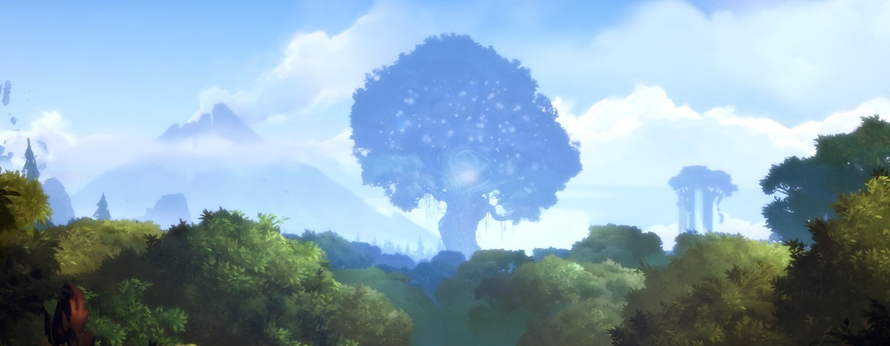
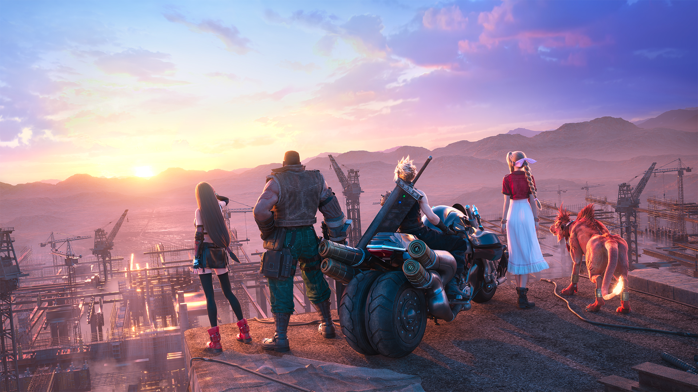
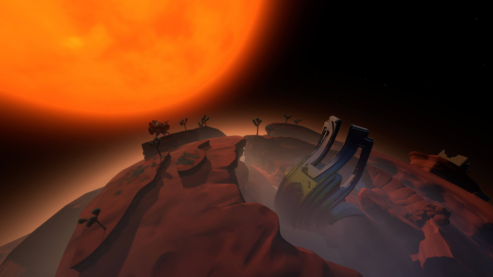
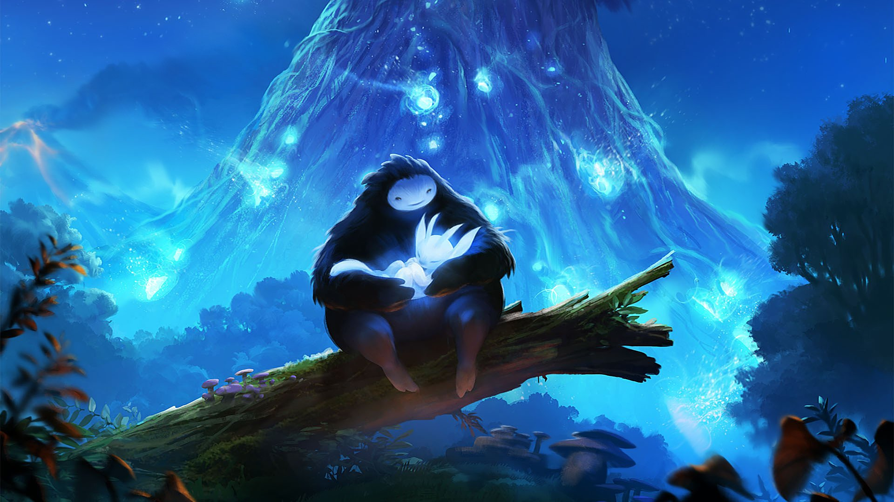
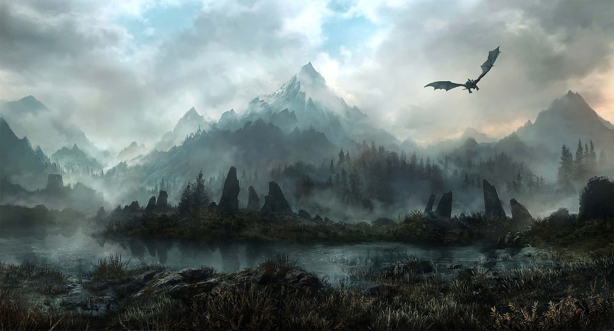
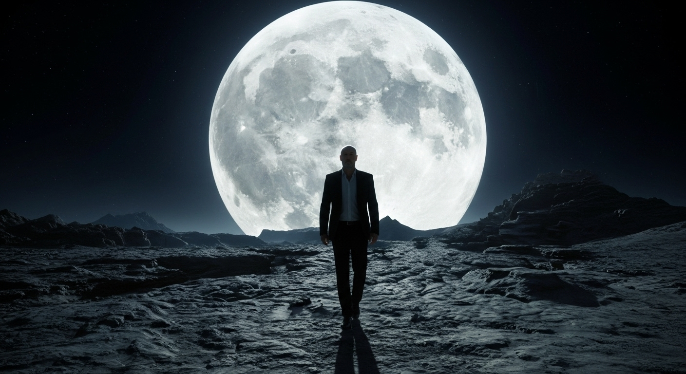

Nella prima parte siamo partiti piano — EastShade, Ico, Steven Wilson. Stavolta si alza il volume. Quattro titoli che non si limitano ad accompagnare: costruiscono mondi sonori con architetture che reggono l'esame musicologico. Wagner lo avrebbe approvato — forse con qualche riserva sul banjo.

Final Fantasy VII Remake — Nobuo Uematsu & team, 2020
Lo ammetto subito: sono entrato nel mondo di Final Fantasy solo da poche ore, e solo con il Remake. Eppure da musicista a volte non serve finire un'opera di cento ore per capire con che tipo di architettura abbiamo a che fare. Bastano i titoli di testa.

Se analizziamo armonicamente il preludio capiamo subito perché funziona tutto così bene. L'arpeggio gira ipnotico fra il sesto e il primo grado, poi lancia il tutto verso una cadenza apparentemente scontata — quarto e quinto con l'aggiunta della nona. Un classico. E invece no. Entra un interscambio modale: un La♭maj7 che sale verso Si♭7, e poi — boom — tutto rientra prepotentemente in Do maggiore. Qui esplode l'orchestra: l'oboe traccia la melodia, i fraseggi di contrappunto amplificano una ricchezza che sa di romanticismo russo, di Šostakovič, di Wagner che avrebbe voluto firmare lui.
C'è un futuristico uso dei synth, un eroico rilancio dato da quella cadenza e un'epica nell'uso della grande orchestra wagneriana. Un livello compositivo notevole — e lo dico con grande umiltà, avendo ascoltato solo l'inizio.
La struttura si regge su tre gambe ben distinte: il sintetizzatore che porta il peso distopico di Midgar, l'orchestra romantica che incarna l'eroismo dei personaggi, e i temi melodici di Uematsu — architetti dell'anima del gioco prima ancora che la storia inizi. È musica scritta per servire la narrazione in modo impeccabile.

Non so ancora dove mi porterà il viaggio di Cloud. Ma la musica di Final Fantasy promette di essere la prova vivente di come il videogioco possa considerarsi l'opera totale del nostro secolo. Se Wagner fosse vivo, sono convinto che vorrebbe musicare un videogioco. Voi quale gli assegnereste?
Outer Wilds — Andrew Prahlow, 2019
Se in Final Fantasy la musica è scritta bene per accompagnare un viaggio, in Outer Wilds la musica è il viaggio stesso. Se in Final Fantasy l'emozione nasceva dalla melodia, qui nasce dalla scoperta della logica intrinseca del divenire.
L'idea alla base del gioco è ormai abbastanza nota — ma se non volete spoiler, saltate al paragrafo successivo. [SPOILER] Siete un astronauta alle prime armi che si risveglia davanti a un falò. Avete esattamente 22 minuti per esplorare un sistema solare miniaturizzato — enorme, bizzarro, meraviglioso — prima che il sole diventi una supernova e distrugga tutto. E il loop ricomincia. Vi svegliate di nuovo lì, davanti a quel fuoco, con qualche conoscenza in più. [FINE SPOILER]

Andrew Prahlow ha lavorato a questa colonna sonora per quasi dieci anni, crescendo insieme al gioco fin dai primi prototipi studenteschi di Mobius Digital. La sua intuizione geniale: usare un banjo. Qualcosa che suonasse fuori asse rispetto alla chitarra acustica — che richiamasse la semplicità rustica dei focolari, ma con un pizzico di stranezza. Il risultato è una sorta di space country, uno shoegaze astrale che ti fa sentire immediatamente a casa pur essendo nello spazio profondo.
Da musicista, quello che mi ha lasciato a bocca aperta è come Prahlow abbia costruito l'architettura sonora basandosi sui leitmotiv dei viaggiatori — e anche qui Wagner la fa da padrone. Ogni esploratore nello spazio suona uno strumento. Quando vi posizionate nel punto giusto, tutte le frequenze si allineano: gli strumenti, pur essendo su pianeti diversi, suonano la stessa melodia in un'unica colossale armonia collettiva.
Qui sfociamo nella filosofia più pura. Il parallelo con Pitagora — che per primo chiamò "Cosmo" la sfera di tutte le cose proprio per l'ordine che esiste in essa — è quasi naturale. Mentre ascoltiamo quegli strumenti lontani accordarsi, stiamo percependo quello che Di Blasi definisce l'intelligibilità del reale: vedere il mondo attraverso il numero e la musica significa capire che le cose non divengono a caso, che esiste una logica intrinseca del divenire.
Il contrasto tra il banjo — limite, forma familiare, ordine rassicurante — e le tracce oniriche delle rovine nomai — l'illimitato, l'indefinibile, il dream pop astrale — non è caos. È un'estetica del non ancora definito. Anassimandro avrebbe riconosciuto l'ápeiron.
Il finale è un mantra, un rosario musicale. La struttura ludica del loop temporale e la struttura musicale dell'eterno ritorno melodico si fondono in modo perfetto: ogni ciclo porta nuova consapevolezza, non semplice ripetizione. Outer Wilds è potentissimo perché poggia su una metafisica reale — e la sua musica lo dimostra ad ogni ascolto.
Ori and the Blind Forest — Gareth Coker, 2015
Una colonna sonora che era sulla bocca di tutti qualche anno fa e oggi sembra quasi finita fuori dai radar. Eppure per me resta una bomba assoluta. Definire il lavoro di Gareth Coker su Ori magico è riduttivo — ma è anche il punto di partenza giusto.

Il dettaglio fondamentale che emerge dalle interviste di Coker è l'idea di flow. In Ori, musica, controlli e art style non sono compartimenti stagni: sono un unico respiro. Coker è un sostenitore accanito dei temi ricorrenti — anche qui Wagner docet. Il leitmotiv funge da bussola emotiva. In un mondo fantasy devi trasportare il giocatore in un luogo diverso, eppure familiare.
Il tema di Ori non è solo una bella melodia al pianoforte: è una cellula che muta continuamente. Inizia fragile e sottile, ma man mano che lo spirito della foresta cresce e acquisisce i poteri, la musica si espande, diventa più complessa, più sicura. Come se la narrazione facesse armonia con il sistema di gioco.
Quando arrivi negli Spirit Caverns la musica ha un certo peso. Ma nel momento esatto in cui sblocchi il wall jump, scatta una transizione: il brano diventa improvvisamente più leggero, saltellante. La musica ti sta comunicando tecnicamente che sei più agile, più libero. È un rinforzo psicologico di rara precisione.
Questo è possibile grazie all'ossessione di Coker per quella che chiama "implementazione" — avere le mani in pasta sul gioco stesso. Come dice lui in una intervista per Spitfire Audio: "È come la teoria musicale — puoi farne a meno, ma quando scrivi per videogioco conoscerla non ti farà certo male." Nelle difficilissime sequenze di fuga, il pianoforte non cerca mai di sovrastare il giocatore. Punta dritto al cuore.
Il risultato è un mondo in cui non ti senti un visitatore, ma parte integrante di un ecosistema. Una musica che ti culla nell'esplorazione e ti fa battere il cuore nelle fughe — senza mai perdere quell'eleganza melodica, quel traino eroico e quella malinconia epica che fanno di Ori qualcosa di più di un platform.
The Elder Scrolls V: Skyrim — Jeremy Soule, 2011
Con la quarta posizione arriviamo a quella che è stata per me la prima vera esperienza di open world. Fino a quel momento l'unico mondo aperto che avevo vissuto era la terra di Flight Simulator 95 — e potete immaginare il devasto mentale che mi ha dato l'immensità di Skyrim al primo approccio. Sapere di poter andare dovunque è un'esperienza di liberazione totale.

La musica è di Jeremy Soule, un compositore old school che prende i maestri del passato — Čajkovskij su tutti — e li mescola a uno stile elettroacustico molto moderno. La vera intuizione fu seguire la richiesta del Game Director Todd Howard, che voleva qualcosa di meno melodico e più aggressivo rispetto ai capitoli precedenti. Il risultato è il celebre tema Dragonborn: un coro maschile che canta all'unisono in una lingua inventata. Un inno che trasuda potenza primordiale.
Molti critici hanno accostato il lavoro di Soule ai grandi compositori nordici come Grieg o Sibelius. C'è un concetto tecnico bellissimo che spiega questa colonna sonora: il Naturklang — un senso di stasi musicale che contiene però una spinta interna data da piccoli ostinati ritmici. È esattamente quello che succede in brani come Unbroken Road: la musica non è un semplice sottofondo, è un quadro alla Friedrich trasformato in suono.
Soule usa riverberi lunghi e cluster di accordi per darti la sensazione fisica di essere in uno spazio immenso. In Far Horizons archi profondi e ottoni scuri richiamano direttamente i paesaggi nordici e l'epica primordiale delle opere di Sibelius. C'è poi una cura quasi artigianale dei dettagli: per imitare il suono di un dulcimer nel brano Ancient Stones, Soule non ha usato un plugin — ha percosso le corde del pianoforte con una matita.
Nella colonna sonora di Skyrim c'è sapienza compositiva, profonda cultura della composizione classica e un mixing che trasforma archi setosi e bassi profondi in aurore boreali. Una musica capace di evocare paesaggi meglio di qualsiasi immagine.

Con i draghi di Jeremy Soule chiudiamo questa seconda parte. Abbiamo attraversato l'architettura wagneriana di Midgar, toccato il cosmo con il banjo di Outer Wilds, ci siamo persi nel flow di Ori e nell'impeto delle aurore boreali di Skyrim. Il podio aspetta.